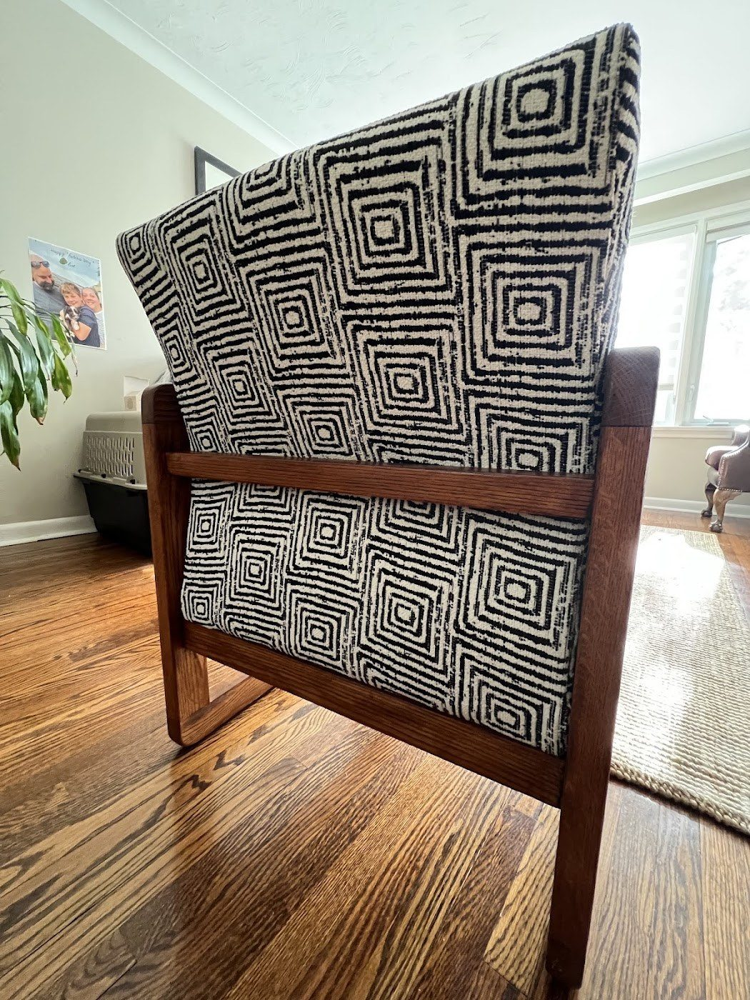

Upholstery shop · 30 Gunns Road, Toronto
Chairs, sofas & vintage pieces, recovered.
Starburst Upholstery is a shop at 30 Gunns Road, in the Stockyards. Reviewers name Dave, and they talk about dining chairs, armchairs, sofas and careful pattern matching. Call (416) 209-8637.
- Dining chairs
- Armchairs & sofas
- Fabric & leather
- Cushion inserts
- Chair repair
What the shop takes in
Dining chairs and armchairs
Reviewers bring in dining chairs and armchairs, including older pieces. Robert Scarborough wrote that Dave reupholstered “my wife and I’s 1970’s dining chairs” and that “they look brand new.” Deeti Vyas wrote that he “reupholstered my husband's grandfathers' arm chair beautifully.” Melinda Wagner had two chairs done and said “he lined up the pattern of the fabric so perfectly.”
Sofas, cushions and repairs
Byron Ng came for a replacement couch cushion insert, tried a sample first, and wrote that Dave “also helped repurpose my old cushion.” GR dropped off “three broken wooden chairs with separated cushions and legs, and had them back the same day.” Sherry, in a Google review copied by canadanear.com, had an inherited sofa recovered from drawings she provided.
Fabric and leather, including boat work
The shop’s own description on Google says it makes leather and fabric furniture for homes, restaurants, hotels and boats. Deeti Vyas’s review photo shows a leather armchair. On canada247.info, Sharon and Wallace Gouk wrote about settees and chairs for their trawler: “nothing on a boat is square.”
Services above come from Google reviews read on 2026-11-17 or copied by canadanear.com, from two reviews on canada247.info, from the shop’s own description on Google, and from review photos. No prices are listed here. Call (416) 209-8637 if you have a piece in mind.
30 Gunns Road, Toronto
A small shop with a perfect Google rating
Monday to Saturday, 9:30 a.m. to 6 p.m. · Sunday closed
Starburst Upholstery is an upholstery shop at 30 Gunns Road. Every Google review visible without signing in names Dave, and the shop replies as “Starburst Upholstery (Owner).” GR also noted “free, convenient parking in front of their shop.” The photos on this page are finished pieces from the public Google listing and from customers’ reviews; Google does not show a storefront photo today.
“I had two chairs reupholstered and he lined up the pattern of the fabric so perfectly. 10/10 would recommend and will use again!”
Melinda Wagner, Google review (as of Nov 17, 2026). Quoted as written.
What customers say
5.0 ★ from 67 Google reviews (checked Nov 17, 2026). Quotes are word for word. Each one says where it was read: on the Google listing itself, or on a public page that copies reviews. Google shows only a handful of reviews without signing in, so some quotes are a Google review copied by canadanear.com, or reviews published on canada247.info (those two do not show a star rating).
★★★★★
Dave reupholstered my husband's grandfathers' arm chair beautifully. It was falling apart before and he did an amazing job at a reasonable price.
★★★★★
Dave was very friendly, professional and accommodating to my request for a replacement of my couch cushion insert. He made sure to allow me to try a sample before placing my order. He went above and beyond to ensure I got exactly what I needed and also helped repurpose my old cushion. I will definitely be returning for future needs.
★★★★★
Super impressed with Dave and team's service at Starburst Upholstery. Dropped off three broken wooden chairs with separated cushions and legs, and had them back the same day. The price was totally reasonable, and the chairs are now super strong and sturdy again. It's also a major plus that they have free, convenient parking in front of their shop. 5 stars!
★★★★★
Dave did an amazing job reupholstering my wife and I’s 1970’s dining chairs. They look brand new! Dave was super communicative, friendly, had great pricing, and his work was fantastic. Would totally recommend Dave and his company Starburst.
★★★★★
Dave was the friendliest person to deal with. Not to mention his incredible upholstery skills. I had two chairs reupholstered and he lined up the pattern of the fabric so perfectly. 10/10 would recommend and will use again!
★★★★★
Dave reupholstered an old sofa we inherited from the previous home owner, and he did an amazing job! See the before and after photos. I provided him some drawings showing what I had in mind, and he was able to bring it to life. He paid attention to the details, and used quality materials. I would highly recommend Dave's upholstery services to anyone.
Star rating not shown in source
I called Dave at the last minute to disassemble and re-assemble a sofabed and a irregular piece of a sectional to get them out of our house for a move! Not easy tasks! He was friendly and courteous and went out of his way to ensure the job was done and done beautifully! I was impressed and would not hesitate to recommend his and his team! Thanks Dave! Anne, Toronto
Star rating not shown in source
We just received our upholstered pieces for our trawler. Starburst Upholstery did a beautiful job. The workmanship of the pieces (two settee's and two occasional chairs) was excellent, they were made exactly as designed and fit perfectly, no small feat considering nothing on a boat is square. Dave was a pleasure to work with and he kept in contact throughout the process and showed up when he said he would. I would highly recommend Dave and his outfit. Sharon and Wallace Gouk, m/v Dirt Free.
Finished pieces
Real photos from Starburst Upholstery’s public Google listing and its customers’ reviews. Google does not show a storefront or shop-floor photo today, so these are finished chairs and sofas. Tap to enlarge.
Visit the shop
30 Gunns Rd
Toronto, ON M6N 3S5
Stockyards, west Toronto
| Monday | 9:30 a.m.–6 p.m. |
|---|---|
| Tuesday | 9:30 a.m.–6 p.m. |
| Wednesday | 9:30 a.m.–6 p.m. |
| Thursday | 9:30 a.m.–6 p.m. |
| Friday | 9:30 a.m.–6 p.m. |
| Saturday | 9:30 a.m.–6 p.m. |
| Sunday | Closed |
These are the hours on Google today: 9:30 a.m. to 6 p.m. Monday to Saturday, closed Sunday. canadanear.com lists 9:00 a.m. to 6:00 p.m. Monday to Saturday and does not list Sunday. Please call (416) 209-8637 if you are coming near opening or closing time.